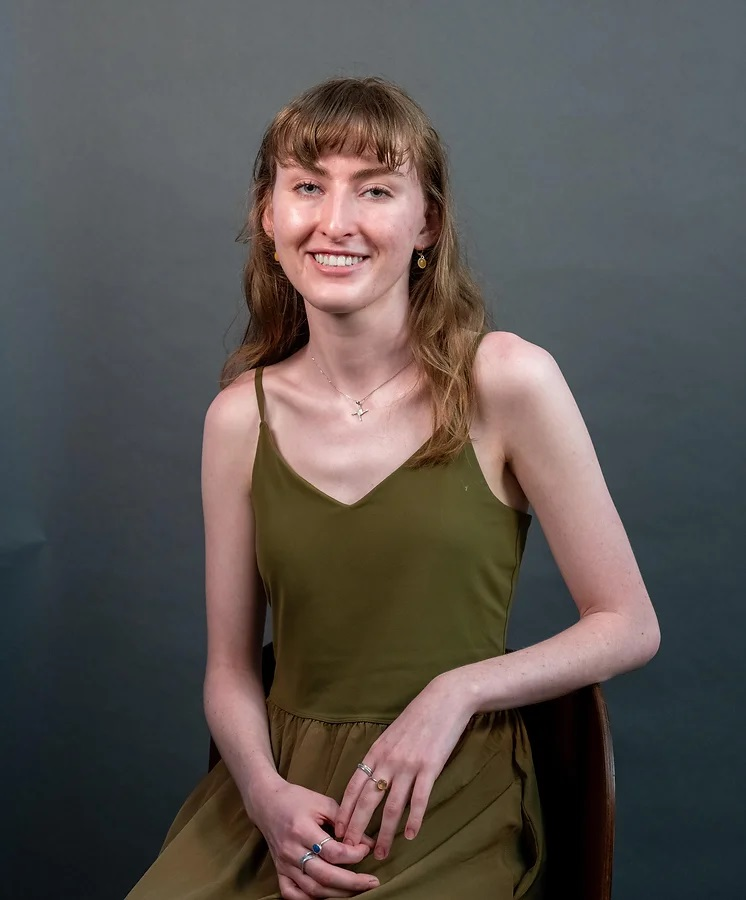

Bridget Byrne
Multimedia Journalist

contact
@brdgtbyrn
240 461 4356
bridget.byrne.999@gmail.com
I'm a journalist who loves telling under-told stories. I grew up in Montgomery County, Md., and I'm currently studying journalism and political science at the University of Maryland.
I cover transportation for the Diamondback, the University of Maryland's student paper. I created this beat when I started at the Diamondback, and I take a pragmatic approach to covering transportation on a College Campus by focusing on pedestrians, micromoblity and parking.
When I'm not reporting, I'm spending time with my family, reading about modern American history or walking my dog.